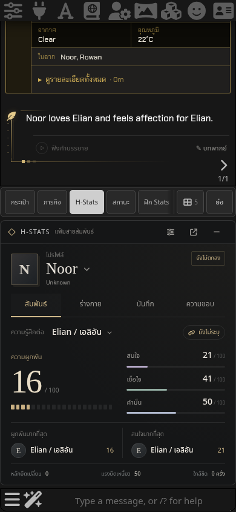
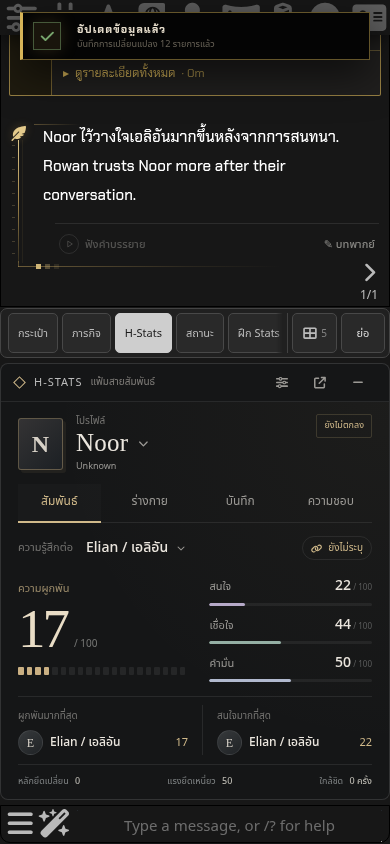
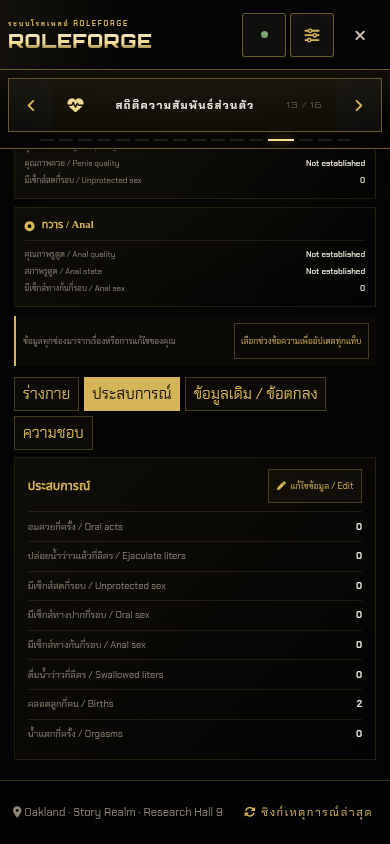
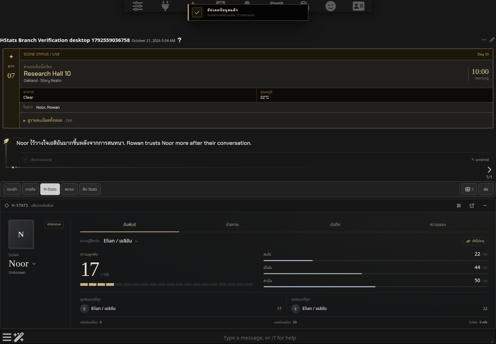

H-Stats หลัง Branch · 0.80.2
SillyTavern 1.19.0 จริง · Dark Lite · ข้อมูลทดสอบผู้ใหญ่ชุดใหม่ · คำตอบควบคุมผ่าน generation/streaming ของ SillyTavern · มือถือเป็น Chromium touch emulation
รายงานและขอบเขตการทดสอบ · ผลตรวจ H-Stats · สรุปผล

จุด Branch เก่า: Trust 41 และประวัติ ณ จุดนั้น
เล่นต่อและ reload: Trust 44, Love 17, Interest 22
ประวัติในหน้าหลัก RoleForge: counter 2 ตรงกับ state และ chatbar
เดสก์ท็อป: เล่นต่อหลัง Branch, บันทึก และ reload